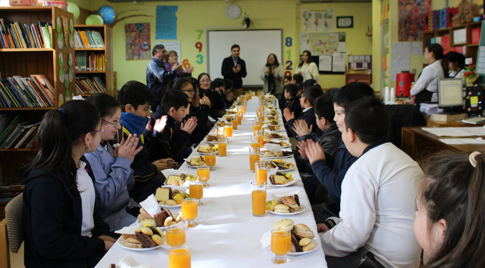

<!DOCTYPE html>
<html lang="en"></html>
<head>
  <meta charset="UTF-8"/>
  <title>Escuela Libertad Puerto Montt</title>
  <link rel="stylesheet" href="../css/noticia.css"/>
</head>
<body>
  <div class="banner1"></div>
  <div class="banner2"></div>
  <section id="nav_cero">
    <div class="box_one">
      <h1>Escuela <span>Libertad</span></h1>
    </div>
    <div class="box_two">
      <nav>
        <ul>
          <li><a href="/index.html">Home</a></li>
        </ul>
        <ul>
          <li><a href="/historia.html"><span>Historia</span></a></li>
        </ul>
        <ul>
          <li><a href="/integracion.html">Integracion</a></li>
        </ul>
        <ul>
          <li><a href="/planespropios.html"><span>Talleres</span></a></li>
        </ul>
        <ul>
          <li><a href="/ProyectoEducativo.html">PEI</a></li>
        </ul>
      </nav>
    </div>
  </section>
  <div class="wrap">
    <h3>8 y 9 de Agosto de 2017</h3>
    <div class="cabenoticia">
      <h1>Reconocimiento a nuestros Alumnos, por Asistencia y Valores.</h1>
    </div>
    <div class="noticiacero__especial__uno">
      <h2> </h2>
    </div>
    <div class="cab__noticia">
      <h1>Se eligieron a los representantes por curso.</h1>
    </div>
    <div class="noticiauno">
      <div class="not__parr"> 
        <p>Durante el primer semestre del presente año se han ido trabajado distintos valores, los cuales están presentes en el PEI de nuestro establecimiento. Es por ello, que cada profesor jefe junto a su equipo de trabajo eligió a un alumno representativo de este sello de valórico. </p>
        <p>Al mismo tiempo, se reconocieron a alumnos y alumnas que presentaron el mayor porcentaje de asistencia de sus cursos. La mayoría de ellos obteniendo un 100% de asistencia durante el primer semestre académico del año 2017.</p>
        <p>Para destacar la perseverancia y compromiso, la empresa Di Piazza efectuó un desayuno, el cual fue financiado con fondos SEP (Subvención Escolar Preferencial). </p>
        <p>Estas acciones se enmarcan dentro del Plan de Gestión de la Convivencia Escolar 2017, siendo incentivos para mejorar tanto la convivencia como la asistencia dentro de nuestra escuela.</p>
        <div class="box__uno"></div>
        <h2>Reconocimiento Mejor asistencia: </h2>
        <li>Antonela Boguez Uribe (Prekínder)</li>
        <li>Reichel Soto Muñoz  (Kínder)</li>
        <li>Kevin Ancar (1°A)</li>
        <li>Josefa Vergara (1°B)</li>
        <li>Flavio Paredes (2°A)</li>
        <li>Samaria Guerrero (2°B)</li>
        <li>Katherin Collihuinca (3°A)</li>
        <li>David Navarro González  (3°A)</li>
        <li>Sergio Neculpan Henríquez (3°A)</li>
        <li>Benjamín Negrón Carrasco (3°A)</li>
        <li>Johan Soto Almonacid (3°A)</li>
        <li>Estefani Trujillo (3°A)</li>
        <li>Amaru Oyarzo (4°B)</li>
        <li>Johan Mansilla Vargas (5°A)</li>
        <li>Jonathan Muñoz Antipan (5°A)</li>
        <li>Joaquín Cárdenas González (5°B)</li>
        <li>Nicolás Jorquera Díaz (5°B)</li>
        <li>Konstanza Vargas Provoste (5°B)</li>
        <li>Jadira Brito Fuentes (6°A)</li>
        <li>Katherin Gómez Ojeda (6°A)</li>
        <li>Valentina Vergara  (6°A)</li>
        <li>Benjamín Acum (6°B)</li>
        <li>Jorge Garrido (7°A)</li>
        <li>Fernanda González (7°A)</li>
        <li>Kevin Gómez (8°A)</li>
        <li>Margarita Oyarzo Ayancan (8°A)</li>
        <h2>Reconocimiento valórico:</h2>
        <li>Michael Almonacid Carrillanca  (1°B)</li>
        <li>Rocío Lagos Paredes (1°A)</li>
        <li>Paloma Maldonado (2°B)</li>
        <li>Lucas Dietz Martínez (2°A)</li>
        <li>Sergio Naculpán Henriquez (3°A)</li>
        <li>Carlos Muñoz (4°B)</li>
        <li>Josué Ruíz (4°A)</li>
        <li>Aylin Gómez Velásquez (5°B) </li>
        <li>Cielo Javiera Barría (5°A)</li>
        <li>Valentina Vergara (6°A)</li>
        <li>Gamaliel Cisternas (6°B)</li>
        <li>Camilo Gómez Báez (7°A)</li>
        <li>Génesis Barrera (8°A)</li>
      </div><div class="fb-post" data-href="https://www.facebook.com/media/set/?set=a.252489421909167.1073741862.100014443334294&amp;type=1&amp;l=99bf190cab" data-width="900" data-show-text="true"><blockquote cite="https://www.facebook.com/media/set/?set=a.252489421909167.1073741862.100014443334294&amp;type=3" class="fb-xfbml-parse-ignore"><p>Hoy  la Direcci&#xf3;n del establecimiento en conjunto con el equipo de convivencia escolar, sorprendieron  a nuestros...</p>Posted by <a href="https://www.facebook.com/esc.libertad.39">Esc Libertad</a> on&nbsp;<a href="https://www.facebook.com/media/set/?set=a.252489421909167.1073741862.100014443334294&amp;type=3">viernes, 11 de agosto de 2017</a></blockquote></div> 
    </div>
    <div class="box__comentario">
      <div class="box__comentario"></div><!-- Script de Comentario-->
<script>(function(d, s, id) {var js, fjs = d.getElementsByTagName(s)[0];if (d.getElementById(id)) return;js = d.createElement(s); js.id = id;js.src = "//connect.facebook.net/es_ES/sdk.js#xfbml=1&version=v2.9";fjs.parentNode.insertBefore(js, fjs);}(document, 'script', 'facebook-jssdk'));</script><div class="fb-comments"data-href="http://www.elibertad.cl/noticias/noticia8.html" data-width="100%" data-numposts="5"></div><div id="fb-root"></div>
    </div>
    <footer>
      <div class="direccion"><span class="icon-compass"></span>
        <h1>Dirección: Iquique 230, Poblacion Libertad - Puerto Montt</h1>
      </div>
      <div class="telefono"><span class="icon-phone"></span>
        <h1>Telefono : 65 2 484525</h1>
      </div>
      <div class="mail"><span class="icon-inbox"></span>
        <h1>libertad@escuelas.dempuertomontt.cl</h1>
      </div>
      <div class="face"><a href="https://www.facebook.com/esc.libertad.39"><span class="icon-facebook-official"></span></a></div><span class="icon-youtube-square"></span>
    </footer>
  </div>
</body>